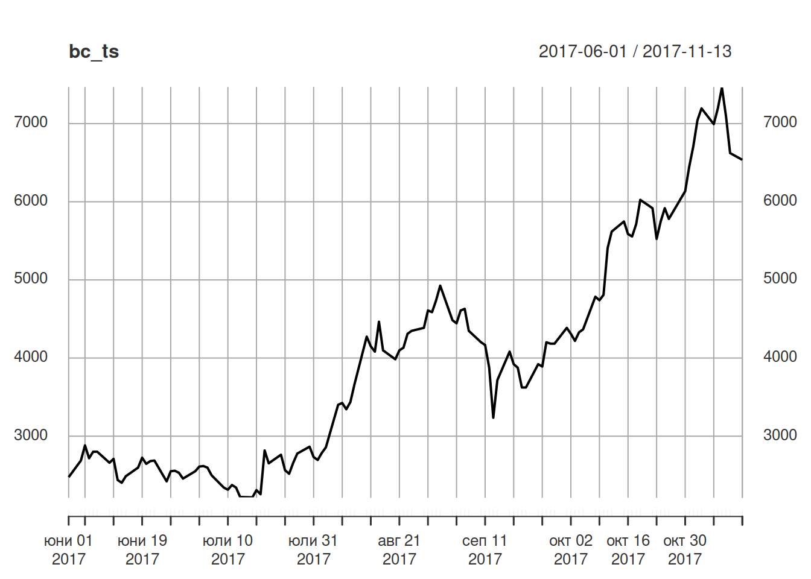
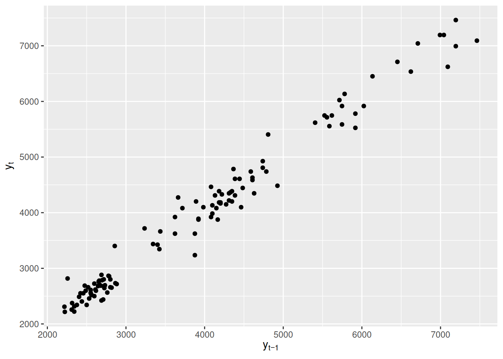

Introduction to time series analysis
10/12/2021
1 Introduction to time series analysis
1.1 Examples of time series?
- temperature (weather), e.g. daily average temperature
- monthly rainfall
- yearly sales of bread in some store
- time to travel to work (monthly, yearly, daily)
# install.packages(c("xts", "ggplot2"))
# Extended Time Series
library(xts)## Loading required package: zoo##
## Attaching package: 'zoo'## The following objects are masked from 'package:base':
##
## as.Date, as.Date.numericlibrary(ggplot2)
bitcoins <- read.csv(
'https://s3.eu-central-1.amazonaws.com/sf-timeseries/data/bitcoin2017-06-01-2017-11-13.csv',
stringsAsFactors = FALSE
)
## Creates an extended time series object
bc_ts <- xts(bitcoins$close, order.by = as.Date(bitcoins$Index))1.2 Difference from cross-section (mock example)
cross_section <- data.frame(
person = c(1, 2, 3, 4, 5, 6),
party = c("A", "B", "C", "C", "B", "C")
)
cross_section1 <- cross_section[c(2, 1, 3, 5, 4, 6), ]
table(cross_section$party) / nrow(cross_section)##
## A B C
## 0.1666667 0.3333333 0.5000000- Plot the time series
plot(bc_ts)
We’ll focus on three properties of time series:
- Level (Niveau): measured by the mean of the time series
- Fluctuations (variation): measured by the variance of the time series (standard deviation)
- Dependencies between the measurements in the time series: measured by correlations
- Compute the average exchange rate over the whole observation period
## Using the mean function
mean(bc_ts)## [1] 3952.641- Compute the average exchange rate for June 2017
## Subset the time series, then apply the mean function
mean(bc_ts["2017-6"])## [1] 2615.252- Compute the average exchange rate for October 2017
## Same as for October 2017
mean(bc_ts["2017-10"])## [1] 5321.251- Compute the average exchange rate before (and including) and after October 2017
## Use a slash to select everything from the start of the time series
## to the end of October
mean(bc_ts["/2017-10"])## [1] 3700.097## Average exchange rate after the end of october
mean(bc_ts["2017-11/"])## [1] 6983.168- Compute the standard deviation for the four periods
1.3 Overall standard deviation
sd(bc_ts)## [1] 1406.843## Subset the time series, then apply the sd function (which computes the standard deviation)
sd(bc_ts["2017-6"])## [1] 137.5662## Same as for October 2017
sd(bc_ts["2017-10"])## [1] 691.1156- Create a scatterplot for the exchange rate time series and its first lag
\[ y_{1}, y_{2}, y_{3}, \ldots, y_{T}\\ y_{t}, t = 1,\ldots, T \] In the bitcoins example \(T = 117\). \(y_1 = 2475.248, y_2 = 2688.172, \ldots, y_{117} = 6535.948\).
Looking from Nov 13th 2017: what was the value on the previous trading day? Answer by simply looking in the table: \(y_{117 - 1} = y_{116} = 6622.517\).
\[ y_{t}, t = 1,\ldots, T\\ y_{t - 1}: \text{ first lag of } y_{t}\\ y_{t - 2}: \text{ second lag of } y_{t} \]
bc_ts_l1 <- lag(bc_ts)
tmp <- cbind(bc_ts, bc_ts_l1)
ggplot(data = tmp, aes(x = bc_ts_l1, y = bc_ts)) +
geom_point() +
labs(
x = expression(y[t-1]),
y = expression(y[t])
)## Warning: Removed 1 rows containing missing values (geom_point).